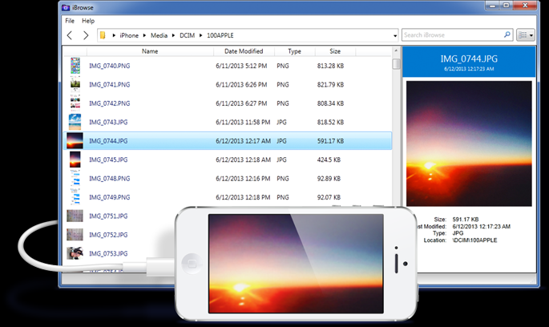

iBrowse is a simple app that lets your Mac or PC access an iOS device file system. Simply connect your device to your computer and you can read and write to the device's media, app and root* directories.
Официальный сайт: https://www.ibrowseapp.com/

Created with the Personal Edition of HelpNDoc: Free Web Help generator